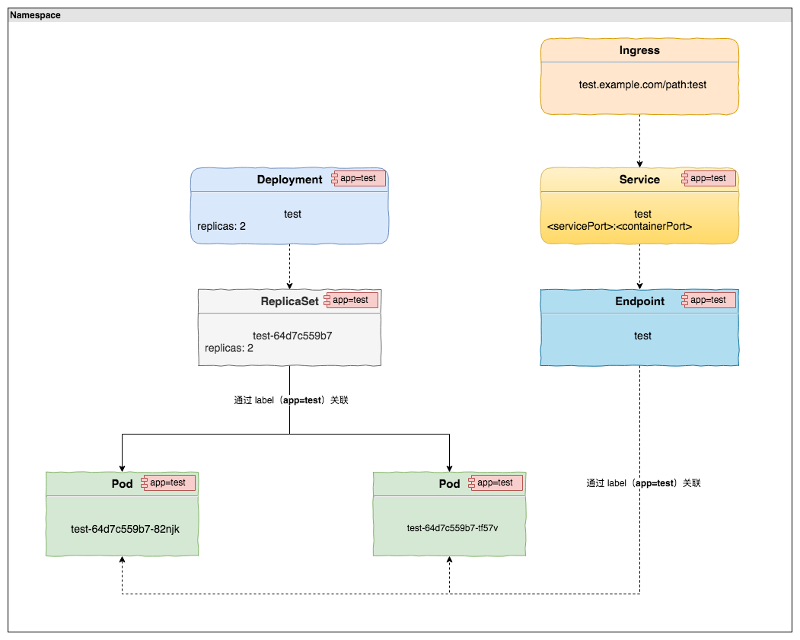

一个 HTTP 应用在 Kubernetes 的运行形式
Table of Contents
伴随着 Kubernetes 功能越来越多，代码量越来越大，相对的可能也就越来越复杂。我有时候在想使用 Kubernetes 的用户应该关心什么，不应该关心什么。对于一个新手来说，开始的时候首先应该弄清楚基本的工作流程。当然，如果你直接看 Kubernetes 的文档，一堆让人眼花缭乱的概念，多少会让人摸不着头脑找不到北。
本文单纯从使用者的角度来说，从一个 HTTP 应用在 Kubernetes 运行涉及到的理念讲起，先来看下面这张图：

1 Namespace（空间）
这张图中涉及了很多 Kubernetes 中的术语，我们先从第一个术语 Namespace 讲起。什么是 Namespace，翻译过来就是空间。如果你要在 Kubernetes 中部署应用，第一步就要创建一个属于应用运行的空间，官方的说法是一个 Kubernetes 物理集群支持多个虚拟集群，这里的虚拟集群就是指代的 Namespace。简单来说，你可以理解为环境或者项目组的概念。Namespace之间是逻辑隔离的，针对每个 Namespace 可以做相应的资源限制（CPU、内存等资源）以及用户管理控制（RBAC）。不同的空间可以运行相同的应用，通过空间逻辑隔离。
2 Deployment
有了 Namespace 之后，我们就可以创建 ReplicaSet 来运行应用了。那什么是 ReplicaSet 呢，在讲 ReplicaSet 之前先介绍一个 Kubernetes 中的重要概念 Pod。Pod 是 Kubernetes 可以创建和管理的最小部署单元，一个 Pod 由一个或者多个 Container 组成，Pod 中的 Container 共享存储、网络等资源。正常情况下，我们使用 Docker 运行一个容器的时候，直接指定镜像运行即可。而在 Kubernetes 中则是以 Pod 的形式创建运行，虽然实际在节点上还是以容器的方式运行，但在 Kubernetes 角度最终呈现形式则是 Pod。
如果我们要运行一个应用，直接创建一个 Pod 即可运行。回到前文说的 ReplicaSet，Pod 本身就可以把应用跑起来了，为何一般不直接创建一个 Pod 呢？这是因为单个部署 Pod，如果 Pod 因为一些因素异常退出了，Pod 本身是不会自动恢复的。而 ReplicaSet 则担任管理 Pod 状态的角色，ReplicaSet 的机制保证通过它们管理的 Pod 保持固定的副本数并持续运行。如果 Pod 因异常原退出了，那么 ReplicaSet 会请求创建新的 Pod，保障 Pod 按照我们的设定运行。
从上图中我们可以看到 ReplicaSet 上层还有一个 Deployment。Deployment 提供了 Pod 和 ReplicaSet 的更新声明。一般情况下不需要单独创建 ReplicaSet，而是直接通过创建 Deployment，由 Deployment 创建管理 ReplicaSet。这是因为 Deployment 在 ReplicaSet 基础上提供了滚动更新、回滚、暂停、恢复等功能。
以上，说了 Pod、ReplicaSet、Deployment 之间的关系，如果要运行一个应用，那么最终我们只需要创建 Deployment 即可运行，Deployment 会自动创建和管理 ReplicaSet。它们之间的运行关系，简单来说就是 Deployment –> ReplicaSet –> Pod，对应图中这三者的关系。一层一层的抽象，看似复杂，当你了解之后就会明白，实际是相当优雅的。
3 Service
有了 Deployment 运行应用之后，如果应用需要被当前空间的其他应用调用怎么办？如果之前没有了解过 Kubernetes 的用户可能会回答是 IP。不错，每个 Pod 都会有一个独立的 IP，但是这些 Deployment 每次更新之后，关联的旧的 Pod 会被销毁，并生成新的随机分配 IP 的 Pod，也就是说 Pod IP 本身是不固定的。更新前的 IP 是可以对应到具体应用，但是更新之后就会失效访问不到对应的 Pod 了。另外一个重要的点就是，如果通过 Pod IP 访问，多副本就意义不大了。那么这时候就需要引入 Service 了，通过创建 Service 可以轻松解决以上提到的问题。Service 简单可以理解为一个负载均衡器，每个 Service 都拥有一个名字和 VIP，并对应一个或者一组 Pod。同一个空间的应用相互访问，直接通过应用的 <serviceName>:<servicePort> 即可访问。
这里的 Service 按照传统的架构，你可以理解应用前的一层 Nginx 代理。创建 Service 之后会自动创建 Endpoint，Endpoint 维护对应 Pod 的具体 IP 信息，并在 Deployment 每次更新的时候动态更新 Pod 列表。Service 本身对用户是透明的，用户无需关心 Pod IP 的变更。
4 Ingress
我们知道在同一个 Kubernetes 集群中同一个空间应用之间访问通过 <serviceName>:<servicePort> 达到相互访问的目的，可能有人会问跨空间如何访问？其实只要在 Kubernetes 集群中，不同应用之间相互访问都是有办法的。跨空间的时候我们可以通过 <serviceName>.<namespace>:<servicePort> 的方式达到跨空间的访问目的，即在原有的基础上加上空间字段。
虽然可以跨空间访问，但是一般还是把每个空间看成独立的环境，不建议跨空间的访问，当然实际情况根据实际需求对待。
如果是集群之外的用户或者应用需要调用呢，这时候 Service 可能就满足不了了，这时候就需要引入 Ingress。通过 Ingress 关联 Service，就可以把集群的服务暴露到外部访问的目的（实际还需要借助 ingress controller 才可以真正对外提供访问，受于篇幅，这里不作介绍）。
当然不通过 Ingress，通过
nodePort、hostNetwork等方式也可以做到集群内部服务的暴露，通俗的做法还是通过 Ingress 暴露服务，一方面是方便统一管理。另外，通过 ingress 还可以提供其他方式不具备的功能需求。